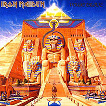

| Capa do CD |
Nome do cd |
Detalhe do cd |
| |
1980 |
Lançamento: 14 de abril de 1980
Gravadora: EMI (EMC–3330)
Formato: CD, Cassette, LP, Stereo 8 |
|
Killers |
Lançamento: 2 de fevereiro de 1981
Gravadora: EMI (EMC–3357)
Formato: CD, Cassette, LP, Stereo 8 |
|
The Number of the Beast |
Lançamento: 22 de março de 1982[32][33]
Gravadora: EMI (EMC–3400)
Formato: CD, Cassette, LP, Stereo 8 |
 |
Piece of Mind |
Lançamento: 16 de maio de 1983
Gravadora: EMI (EMA–800)
Formato: CD, Cassette, LP |
|  |
Powerslave |
Lançamento: 3 de setembro de 1984
Gravadora: EMI (POWER–1)
Formato: CD, Cassette, LP |
| |
Somewhere in Time |
Lançamento: 29 de setembro de 1986
Gravadora: EMI (EMC–3512)
Formato: CD, Cassette, LP |
| |
Seventh Son of a Seventh Son |
Lançamento: 11 de abril de 1988
Gravadora: EMI (EMD–1006)
Formato: CD, Cassette, LP |
|
| No Prayer for the Dying |
Lançamento: 1 de outubro de 1990
Gravadora: EMI (EMD–1017)
Formato: CD, Cassette, LP |
| |
Fear of the Dark |
Lançamento: 11 de maio de 1992
Gravadora: EMI (EMD–1032)
Formato: CD, Cassette, LP
|
| |
The X Factor |
Lançamento: 2 de outubro de 1995
Gravadora: EMI (7243–8–35819–2–4)
Formato: CD, Cassette, LP |
|
Virtual XI |
Lançamento: 23 de março de 1998
Gravadora: EMI (7243–4–93915–2–9)
Formato: CD, Cassette, LP |
|
Dance of Death |
Formato: 8 de setembro de 2003
Gravadora: EMI (7243–5–92340–2–1)
Formato: CD, Cassette, LP, DVD-A |